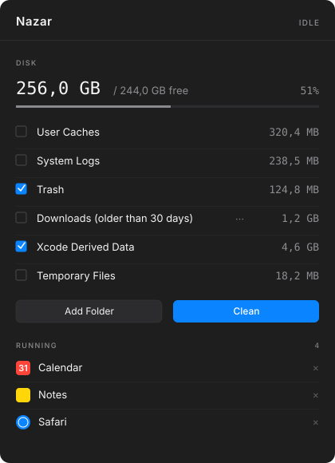

One-click macOS cleanup. Closes apps, clears caches, empties the Trash, checks for updates. Lives quietly in your menu bar.
Download View sourcemacOS 13.0+ · Universal · MIT-licensed
Close apps → clean caches → empty Trash → check updates → relaunch favorites. All in order.
Build cleanup recipes (Light Clean, Empty Trash, Just Updates). Each can have its own global shortcut.
Keep your editor or music player running while everything else closes. Always-protect or one-time.
Point Nazar at any directory with optional age filters (7d, 30d, 90d, 6mo, 1y).
No network calls. No telemetry. The log file lives only on your machine.
Every byte of code is on GitHub. MIT license. Read it, fork it, audit it.
